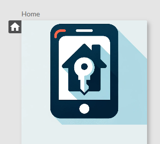

Documentation
Screen sequence editor
This editor allows you to link the screens of your mobile application based on user interactions, such as button clicks and other graphical components like lists. You will also learn how to set the startup screen of your application.
Linking screens
To create smooth navigation in your application, follow these steps:
Add an interactive component
Add a graphical component (for example, an Enter button) to your screen as shown below.

Set a screen transition
- In the Flow tab
- Select the button component
- Drag the right handle to the destination screen
Undo a screen transition
- In the Flow tab
- Select the button component
- Select the link
- Drag the end of the link outside the screen
Set the startup screen
To set the screen that appears when the application is launched:
- Go back to the screen sequence editor.
- Locate the screen you want to set as the startup screen.
- Click the home icon to the left of that screen.

Test your navigation
It is important to test your application's navigation to ensure everything works as expected.
- Use the simulator mode from the Simulation tab.
- Interact with the screens you have configured.
- Check if the navigation meets your expectations.
Tips and tricks
- Ensure that the transitions between screens are logical and intuitive for the user.
- Use clear screen names to simplify navigation configuration.
- Regularly test changes to avoid navigation errors.